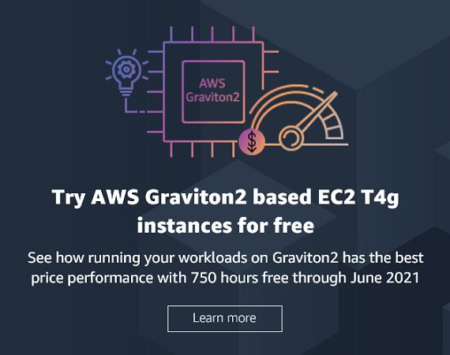
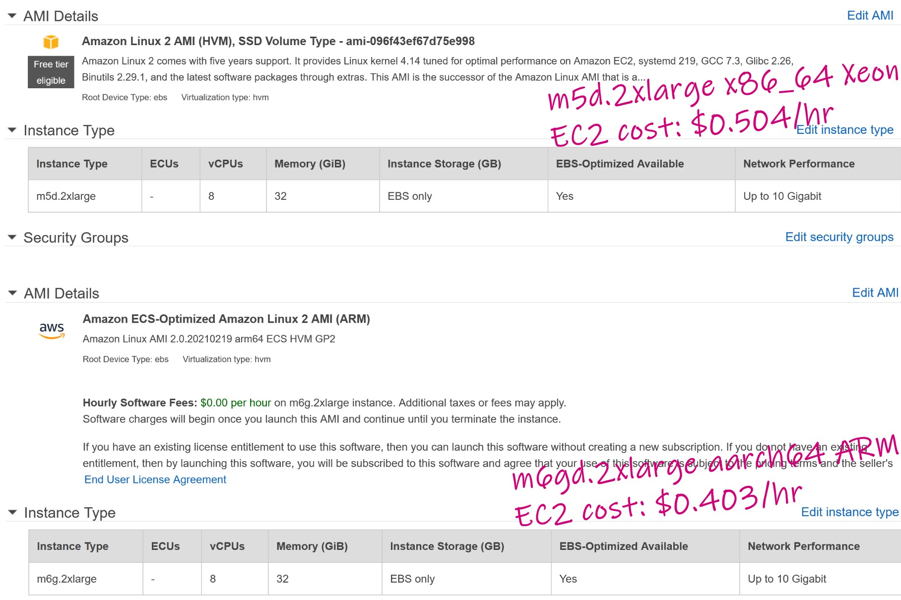

This was first published on https://www.dbi-services.com/blog/aws-postgresql-on-graviton2/ (2021-03-08)
Republishing here for new followers. The content is related to the versions available at the publication date.
. 
I’ve installed “Amazon Linux 2 AMI (HVM)” on m5d.2xlarge (x86_64) and “Amazon ECS-Optimized Amazon Linux 2 AMI (ARM)” for m6gd.2xlarge ARM64 (aarch64) 
I’ll install PostgreSQL here and measure LIOPS with PGIO (https://github.com/therealkevinc/pgio)
sudo yum install -y git gcc readline-devel zlib-devel bison bison-devel flex
git clone https://github.com/postgres/postgres.git
sudo yum install -y gcc readline-devel zlib-devel bison-devel
time ( cd postgres && ./configure && make all && sudo make install )
( cd postgres/contrib && sudo make install )This compiles PostgreSQL from the community source (version 14devel). I can already get an idea about the CPU performance:
export PGDATA=~/pgdata
echo "$PATH" | grep /usr/local/pgsql/bin || export PATH="$PATH:/usr/local/pgsql/bin"
initdb
pg_ctl -l postgres.log start
top -bn1 -cp $(pgrep -xd, postgres)
Environment is set and instance started
sed -ie "/shared_buffers/s/^.*=.*/shared_buffers= 8500MB/" $PGDATA/postgresql.conf
sed -ie "/huge_pages/s/^.*=.*/huge_pages= true/" $PGDATA/postgresql.conf
awk '/Hugepagesize.*kB/{print 1 + int(1024 * MB / $2)}' MB=9000 /proc/meminfo | sudo bash -c "cat > /proc/sys/vm/nr_hugepages"
pg_ctl -l postgres.log restart
I set 8GB of shared buffers to be sure to measure logical I/O from the database shared memory.
git clone https://github.com/therealkevinc/pgio
tar -zxf pgio/pgio*tar.gz
cat > pgio/pgio.conf <<CAT
UPDATE_PCT=0
RUN_TIME=$(( 60 * 600 ))
NUM_SCHEMAS=4
NUM_THREADS=1
WORK_UNIT=255
UPDATE_WORK_UNIT=8
SCALE=1024M
DBNAME=pgio
CONNECT_STRING="pgio"
CREATE_BASE_TABLE=TRUE
CAT
cat pgio/pgio.conf
psql postgres <<<'create database pgio;'
time ( cd pgio && sh setup.sh )
I initialized PGIO for four 1GB schemas
echo $(curl -s http://169.254.169.254/latest/meta-data/instance-type) $(uname -m)
time ( cd pgio && sh runit.sh )
uptime
This will run PGIO as configured (4 threads on 1GB for 1 hour)
[ec2-user@ip-172-31-46-196 ~]$ echo $(curl -s http://169.254.169.254/latest/meta-data/instance-type) $(uname -m)
m6gd.2xlarge aarch64
[ec2-user@ip-172-31-46-196 ~]$ time ( cd pgio && sh runit.sh )
Date: Fri Mar 5 11:35:18 UTC 2021
Database connect string: "pgio".
Shared buffers: 8GB.
Testing 4 schemas with 1 thread(s) accessing 1024M (131072 blocks) of each schema.
Running iostat, vmstat and mpstat on current host--in background.
Launching sessions. 4 schema(s) will be accessed by 1 thread(s) each.
pg_stat_database stats:
datname| blks_hit| blks_read|tup_returned|tup_fetched|tup_updated
BEFORE: pgio | 12676581 | 2797475 | 2663112 | 26277 | 142
AFTER: pgio | 11254053367 | 2797673 | 11063125066 | 11057981670 | 162
DBNAME: pgio. 4 schemas, 1 threads(each). Run time: 3600 seconds. RIOPS >0< CACHE_HITS/s >3122604<
This is about 780651 LIOPS / thread.
[ec2-user@ip-172-31-29-57 ~]$ echo $(curl -s http://169.254.169.254/latest/meta-data/instance-type) $(uname -m)
m5d.2xlarge x86_64
[ec2-user@ip-172-31-29-57 ~]$ time ( cd pgio && sh runit.sh )
uptimeDate: Fri Mar 5 13:20:10 UTC 2021
Database connect string: "pgio".
Shared buffers: 8500MB.
Testing 4 schemas with 1 thread(s) accessing 1024M (131072 blocks) of each schema.
Running iostat, vmstat and mpstat on current host--in background.
Launching sessions. 4 schema(s) will be accessed by 1 thread(s) each.
pg_stat_database stats:
datname| blks_hit| blks_read|tup_returned|tup_fetched|tup_updated
BEFORE: pgio | 109879603 | 2696860921 | 2759130206 | 2757898526 | 20
AFTER: pgio | 13016322621 | 2697387365 | 15459965084 | 15455884319 | 20
DBNAME: pgio. 4 schemas, 1 threads(each). Run time: 3600 seconds. RIOPS >146< CACHE_HITS/s >3585123<
This is about 896280 LIOPS / thread.
For pgbench test you may want to read https://www.percona.com/blog/2021/01/22/postgresql-on-arm-based-aws-ec2-instances-is-it-any-good/ where Jobin Augustine and Sergey Kuzmichev have run long tests, read-only and read-write, with and without checksum. And also sysbench-tpcc. I’m doing only a very simple test here to show that result depend on what you test.
time pgbench -i -s 100 postgres
time pgbench -T 600 -c 4 --protocol=simple postgres
Result:
time pgbench -T 600 -c 4 --protocol=prepared postgres
Result:
Here is the price of the instance I used. The software is free and the EC2 running hours for Graviton2 is 20% cheaper:
The compilation time for the PostgreSQL sources was 11% slower on ARM: 3 minutes 39 seconds vs. 3 minutes 14 seconds vs.
The PostgreSQL shared buffer cache hits were 13% faster x86: 896280 LIOPS / thread vs. 780651 LIOPS / thread, but that is the most optimal database work: all in shared buffers, limited calls, roundtrips and context switch. All is in CPU and RAM access.
However, where running pgbench, ARM had nearly the same performance for the prepared statement protocol and even a bit faster with the simple protocol. And that’s finally what most of database applications are doing. So, finally, the big difference is the price as the Graviton2 m6gd.2xlarge is 20% cheaper than the m5d.2xlarge x86. Here I installed PostgreSQL on EC2, but Graviton2 is available on RDS as well (in preview) with db.r6g
I’ve given more details about the GCC version and compilation flags in the next post
{kind=link}